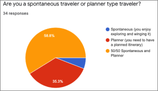

For my first UX Design Bootcamp assignment, we were tasked with creating a mobile application for travel planning. I originally decided to create an app focused on seeking out local recommendations but found the niche aspect to be difficult. I changed my entire research plan and pivoted towards the type of traveler I am: super planned with almost every second accounted for.
First, I started off by creating an idea of what I thought the target audience might be for a specialized travel planning application.
This was the Proto Persona (pictured to the right above). I based her behaviors around being a neat, organized individual who enjoyed traveling.
Next, I began constructing the Research Plan of what I believed my app would entail, goals I had, potential research methods
like interviews and surveys, and created an Interview Plan detailing what questions I would ask during interviews.
These interviews would help answer my research questions.
I conducted 6 user interviews with 15 questions prepared. They ranged from those who travel frequently to those who only traveled once in a while. As a result, the data I gathered was quite varied across the board.
After interviews were finished, I started creating an Affinity Diagram (pictured above). I took the interview answers,
typed them onto sticky notes on a Miro board, and grouped them together based on the categories or similarities of the sticky notes' contents.
This information was when used to create an updated User Persona (pictured below)
based off actual data and not my original assumptions of a target user of this application.
Going off the type of interview questions I used,
I went on to gather additional data by creating a survey on Google Forms to hand out.
Participants were split and enjoyed a certain level of planning but were generally open to spontaneity.
It was interesting to see the different, split perspectives.

Lastly, I took the data from the affinity diagram and user persona I created to
draw up an Empathy Map (pictured to the right) to show how a potential user might be feeling stress about the travel planning process.
I thought about possible problems that might arise throughout the planning process.
After finishing up my initial data gathering for user research, I then moved onto the
Definition & Ideation phase to flesh out my design idea.
Next up was identifying what potential problems or issues that
travelers might have with their travel planning process. I developed the following Problem Statement:
After figuring out the “problems” that meticulous travelers might face, I went on to creating a User Insight Statement.
This summarized the problem statement along with data gathered through interviews.
I thought about my brand’s “identity” and thought of a simple phrase that described the app for my Value Proposition Statement (pictured above to the left).
I used the I Like, I Wish, and What? process to think through potential features that travelers would enjoy using on my mobile app.
I Like was for doable ideas, I Wish for future ideas, and What If? for outrageous but fun ideas. This was my overall Brainstorming process (pictured on the right).
I narrowed down my list of ideas from the brainstorming session and used to Now Wow! How? method to create a Feature Prioritization Matrix in Miro. I thought about what features I definitely needed (time management) and what might not be so important at the moment (calculating expenses over a period of time or needing separate categories).